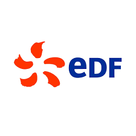

Réseaux &
Télécoms ·
Cybersécurité
Portfolio de compétences — BUT R&T parcours Cybersécurité, 2ème année. De l'administration réseau à la sécurisation des systèmes d'information, en passant par l'exploitation en environnement industriel chez EDF.
5 compétences
cœur du diplôme
Le BUT R&T Cybersécurité structure la formation autour de cinq blocs de compétences progressifs, du réseau à la sécurité opérationnelle.
Configuration, déploiement et maintenance des infrastructures réseaux et services internet.
Conception et déploiement de solutions d'accès, raccordement des SI aux réseaux publics.
Développement d'applications communicantes, scripts d'automatisation, interfaces réseau.
Mise en place de politiques de sécurité, gestion des accès, conformité RGPD.
Détection d'incidents, analyse de logs, SIEM, veille cyber et conformité contractuelle.
Projets concrets
comme preuves de compétences
Chaque SAÉ constitue une preuve tangible de maîtrise des compétences visées par le BUT R&T.
Audit de bonnes pratiques, création de supports de sensibilisation pour les utilisateurs finaux.
Architecture réseau complète avec VPN, firewalls, segmentation VLAN et politique de sécurité.
Audit complet d'un SI, identification des vulnérabilités, plan de remédiation et durcissement.